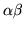
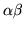

Use
HEREST is invoked via the command line
HERest [options] hmmList trainFile ...
This causes the set of HMMs given in hmmList to be loaded.
The given list of
training files is then used to perform one re-estimation cycle. As always,
the list of training files can be stored in a script file if required. On
completion, HEREST outputs new updated versions of each HMM definition. If
the number of training examples falls below a specified threshold
for some particular HMM, then
the new parameters for that HMM are ignored and the original parameters are used
instead.
The detailed operation of HEREST is controlled by the following
command line options
- -a
- Use an input transform to obtain alignments for updating
models or transforms (default off).
- -c f
- Set the threshold for tied-mixture observation
pruning to f.
For tied-mixture TIEDHS systems, only those
mixture component probabilities which fall within f of
the maximum mixture component probability are used in calculating
the state output probabilities (default 10.0).
- -d dir
- Normally HEREST looks for HMM definitions
(not already loaded via MMF files)
in the current directory. This option tells HEREST to look in
the directory dir to find them.
- -h mask
- Set the mask for determining which transform names are
to be used for the output transforms. If PAXFORMMASK
or INXFORMMASK are not specified then the input
transform mask is assumed for both output and parent transforms.
- -l N
- Set the maximum number of files to use for each
speaker, determined by the output transform speaker mask,
to estimate the transform with.(default ).
- -m N
- Set the minimum number of training examples
required for any model to N. If the actual number
falls below this value, the HMM is not updated and the original
parameters are used for the new version (default value 3).
- -o ext
- This causes the file name extensions of the
original models (if any) to be replaced by ext.
- -p N
- This switch is used to set parallel mode operation.
If p is set to a positive integer N, then HEREST will
process the training files and then dump all the accumulators
into a file called HERN.acc. If p is set to 0, then
it treats all file names input on the command line as the names
of .acc dump files. It reads them all in, adds together
all the partial accumulations and then re-estimates all the
HMM parameters in the normal way.
- -r
- This enables single-pass retraining. The list of training
files is processed pair-by-pair. For each pair, the first file
should match the parameterisation of the original model set. The
second file should match the parameterisation of the required new
set. All speech input processing is controlled by configuration
variables in the normal way except that the variables describing
the old parameterisation are qualified by the name HPARM1
and the variables describing the new parameterisation are
qualified by the name HPARM2. The stream widths for the
old and the new must be identical.
- -s file
- This causes statistics on occupation of each
state to be output to the named file. This file
is needed for the RO command of HHEd but it is also
generally useful for assessing the amount of training material
available for each HMM state.
- -t f [i l]
- Set the pruning threshold to f. During the
backward probability calculation, at
each time
 all (log)
all (log)  values falling more than f below the
maximum value at that time are ignored. During the
subsequent forward pass, (log)
values falling more than f below the
maximum value at that time are ignored. During the
subsequent forward pass, (log)  values are only
calculated if there are corresponding valid values.
Furthermore, if the ratio of the
 product divided
by the total probability (as computed on the backward pass)
falls below a fixed threshold then those values of
and are ignored. Setting f to zero disables
pruning (default value 0.0). Tight pruning thresholds can
result in HEREST failing to process an utterance.
if the i and l options are given, then a pruning
error results in the threshold being increased by i and
utterance processing restarts. If errors continue, this procedure will
be repeated until the limit l is reached.
values are only
calculated if there are corresponding valid values.
Furthermore, if the ratio of the
 product divided
by the total probability (as computed on the backward pass)
falls below a fixed threshold then those values of
and are ignored. Setting f to zero disables
pruning (default value 0.0). Tight pruning thresholds can
result in HEREST failing to process an utterance.
if the i and l options are given, then a pruning
error results in the threshold being increased by i and
utterance processing restarts. If errors continue, this procedure will
be repeated until the limit l is reached.
- -u flags
- By default, HEREST updates all of the HMM parameters,
that is, means, variances, mixture weights and
transition probabilies. This
option causes just the parameters indicated by the flags
argument to be updated, this argument is a string containing one
or more of the letters m (mean), v (variance) ,
t (transition), a (linear transform), p (use
MAP adaptation), and w (mixture weight). The
presence of a letter enables
the updating of the corresponding parameter set.
- -v f
- This sets the minimum variance (i.e. diagonal element of
the covariance matrix) to the real value f (default value
0.0).
- -w f
- Any mixture weight which falls below the global
constant MINMIX is treated as being zero.
When this parameter is set, all mixture weights are floored
to f * MINMIX.
- -x ext
- By default, HEREST expects a HMM definition for
the label X to be stored in a file called X. This
option causes HEREST to look for the HMM definition in the
file X.ext.
- -z file
- Save all output transforms to file. Default
is TMF.
- -B
- Output HMM definition files in binary format.
- -E dir [ext]
- Parent transform directory and optional extension
for parent transforms. The default option is that no parent
transform is used.
- -F fmt
- Set the source data format to fmt.
- -G fmt
- Set the label file format to fmt.
- -H mmf
- Load HMM macro model file mmf. This option
may be repeated to load multiple MMFs.
- -I mlf
- This loads the master label file mlf. This option
may be repeated to load several MLFs.
- -J dir [ext]
- Add directory to the list of possible input
transform directories. Only one of the options can specify the
extrension to use for the input transforms.
- -K dir [ext]
- Output transform directory and optional extension
for output transforms. The default option is that there is no
output extension and the current transform directoryis used.
- -L dir
- Search directory dir for label files (default
is to search current directory).
- -M dir
- Store output HMM macro model files in the directory dir.
If this option is not given, the new HMM definition will overwrite
the existing one.
- -X ext
- Set label file extension to ext
(default is lab).
HEREST also supports the standard options -A,
-C, -D, -S, -T, and -V as described
in section 4.4.
Back to HTK site
See front page for HTK Authors